나만의 LoRA
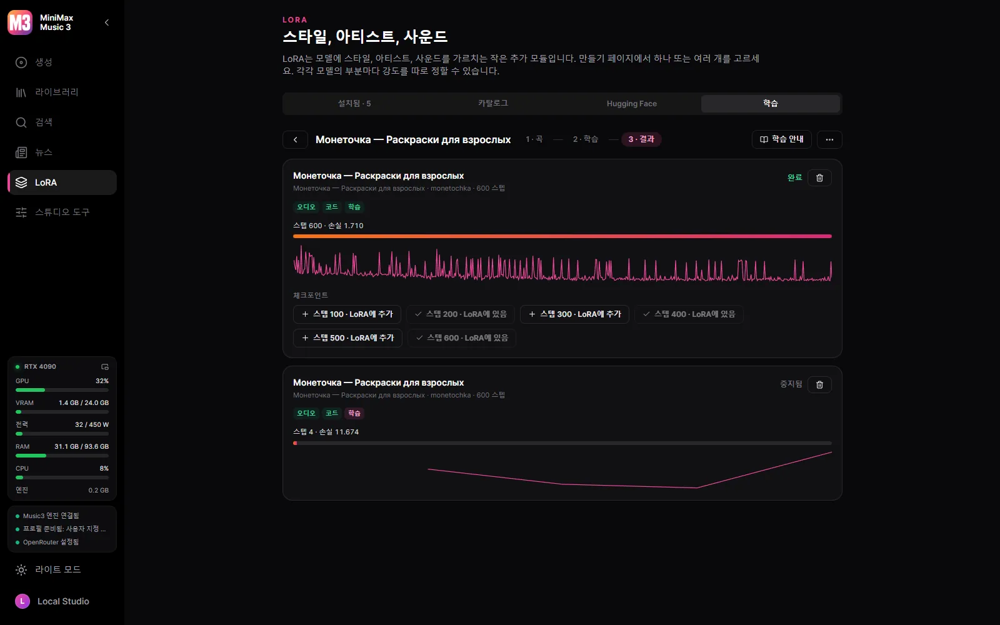
한 아티스트나 스타일의 곡들로 HOT-Step의 트레이너와 레시피를 써서 내 GPU에서 LoRA를 학습합니다.
MiniMax Music3를 위한 Windows 데스크톱 스튜디오.
Windows 10/11 x64와 NVIDIA 그래픽 카드(GTX 900 시리즈 이상)가 필요합니다. 모델은 스튜디오 안에서, 사용자가 결정할 때만 내려받습니다.
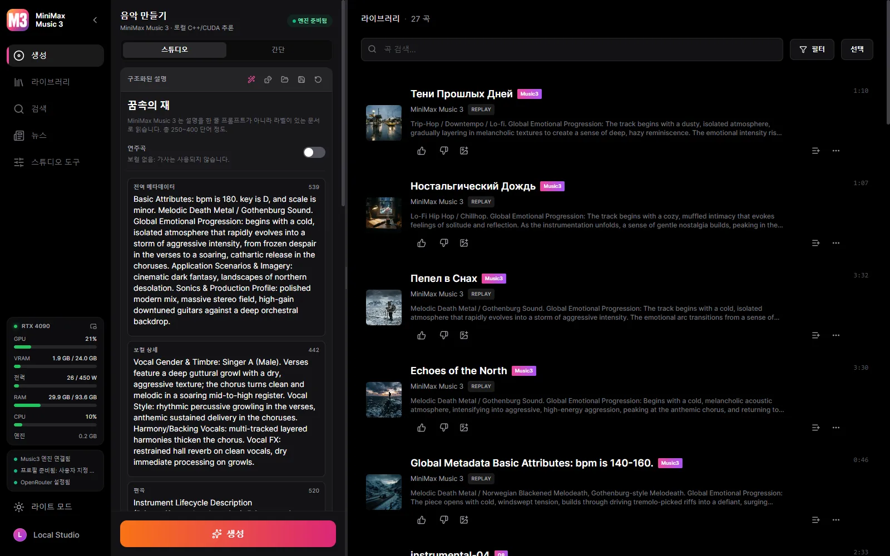

한 아티스트나 스타일의 곡들로 HOT-Step의 트레이너와 레시피를 써서 내 GPU에서 LoRA를 학습합니다.
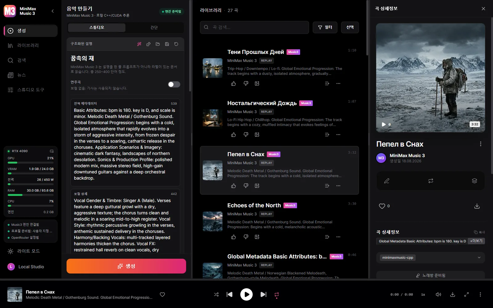
단어마다 타임스탬프가 있는 Enhanced LRC.
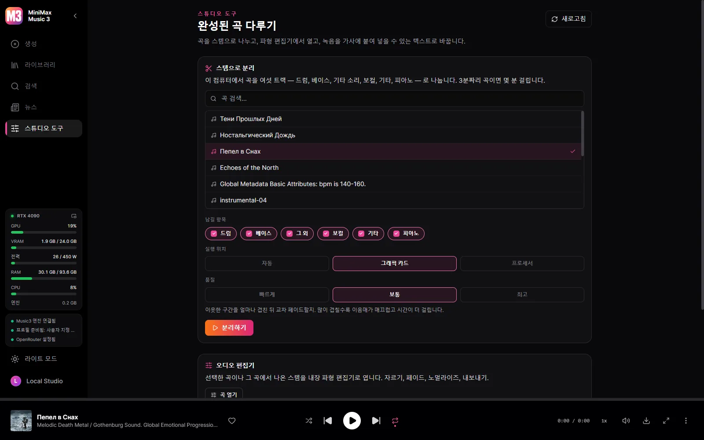
드럼, 베이스, 기타 소리, 보컬, 기타, 피아노 — 여섯 트랙을 HT-Demucs가 그래픽카드에서 분리합니다.
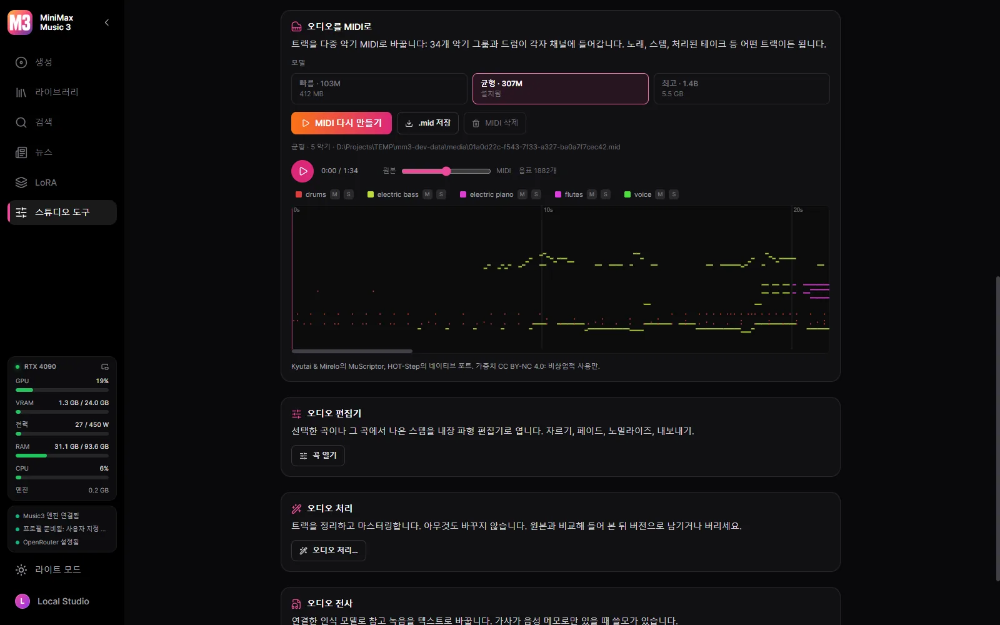
노래, 스템, 처리된 테이크를 GPU의 MuScriptor가 다중 악기 MIDI(34개 악기 그룹과 드럼)로 바꿉니다.

Winamp 주파수의 10밴드 이퀄라이저(프리셋과 .EQF 파일), 수백 개의 프리셋을 가진 MilkDrop 또는 열 가지 모양의 스펙트럼, 그리고 각 창을 분리·도킹·크기 조절할 수 있는 Winamp 모드.
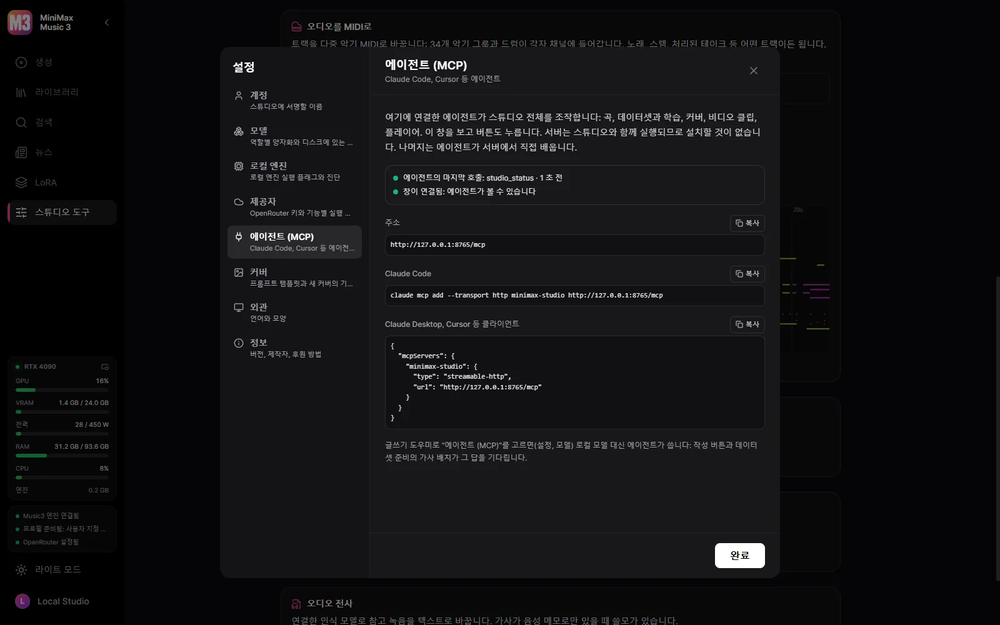
Claude Code, Claude Desktop, Cursor를 연결하면 에이전트가 스튜디오의 모든 일을 합니다.
스튜디오 그대로, 여러분의 언어로.
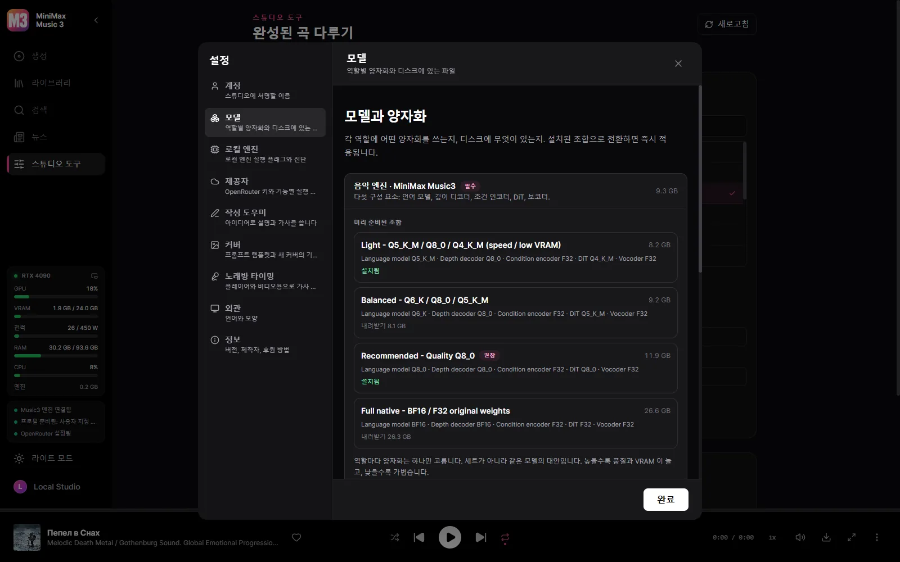
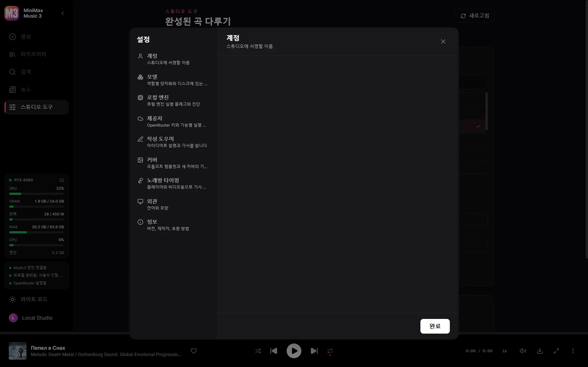
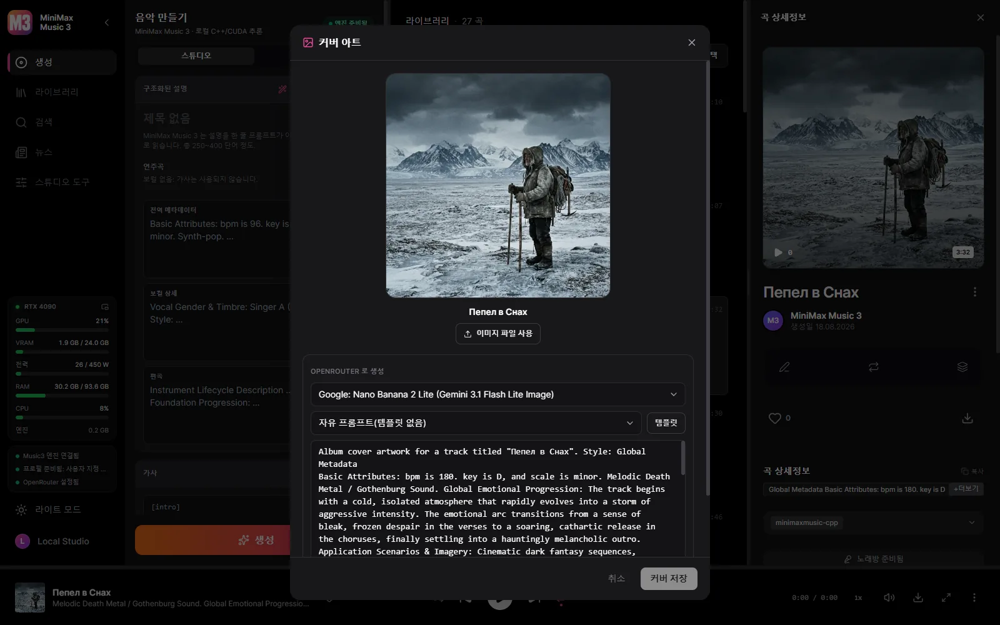
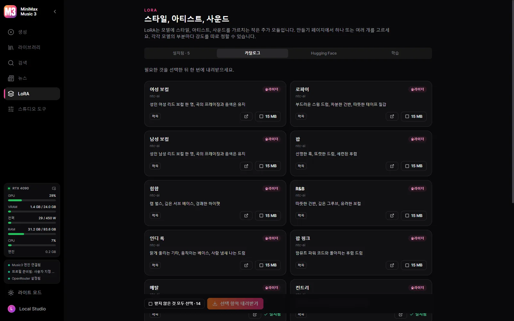
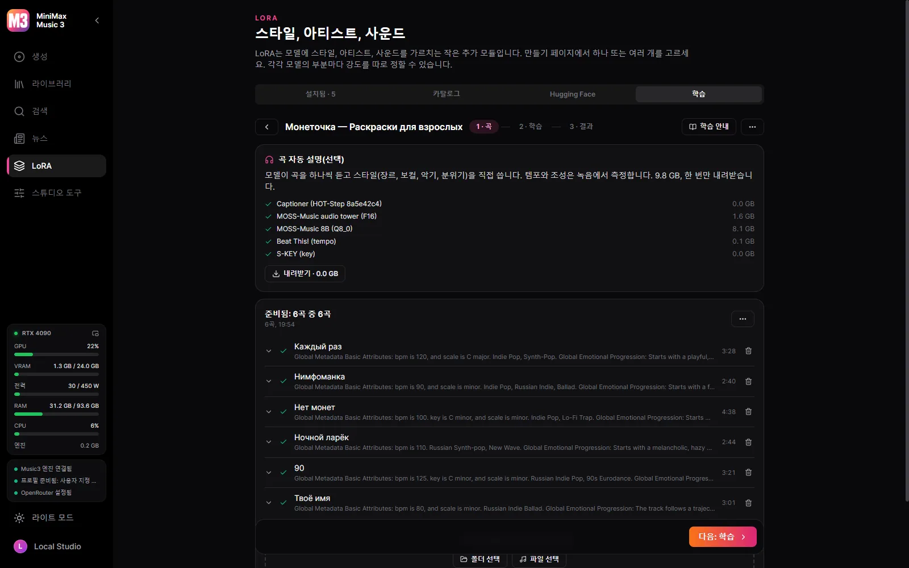
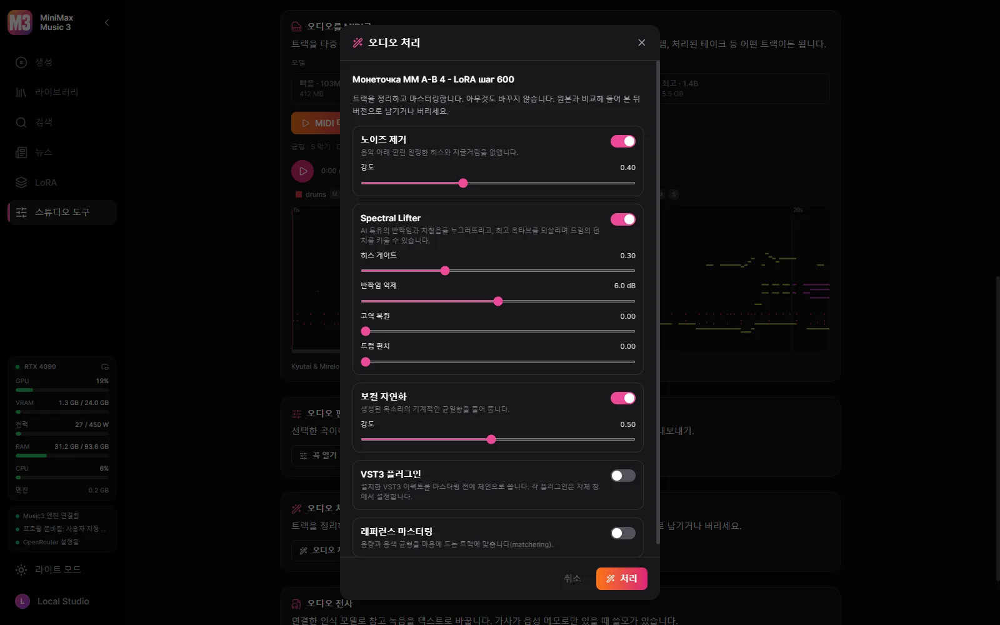
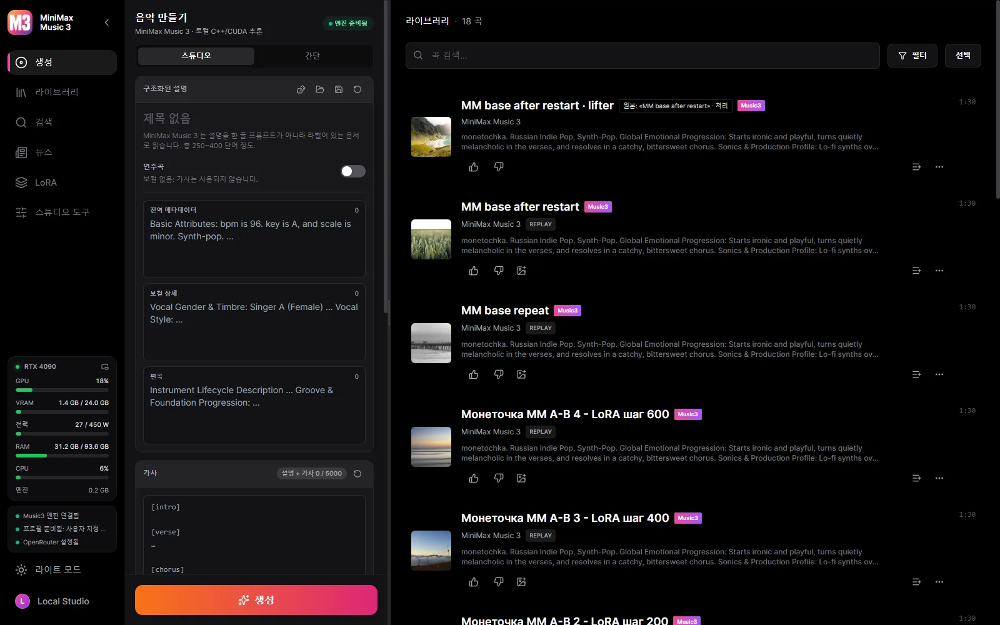
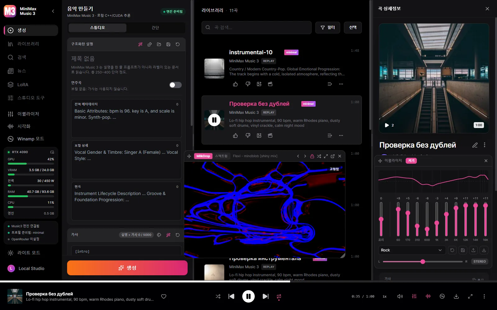
Windows 10/11 x64와 NVIDIA 그래픽 카드(GTX 900 시리즈 이상)가 필요합니다. 모델은 스튜디오 안에서, 사용자가 결정할 때만 내려받습니다.
동작하는 Music3 설치는 언제나 다섯 구성 요소입니다: 언어 모델, RVQ 깊이 디코더, 조건 인코더, DiT, 보코더.
| 그래픽 카드 | 프로필 | 내려받기 |
|---|---|---|
| 30 GB+ | Full Native — BF16 / BF16 / F32 | 28.6 GB |
| 15 GB+ | Q8 Quality | 12.8 GB |
| 11.5 GB+ | Balanced — Q6 / Q8 / Q5 | 9.8 GB |
| 9.5 GB+ | Light — 속도와 낮은 VRAM | 7.7 GB |
| 8 GB | Minimal — Q3, 8 GB 카드용 | 6.5 GB |
스튜디오가 카드를 확인해 실제로 돌아가는 프로필을 미리 골라 주지만, 내려받을지는 언제나 사용자가 정합니다. 모든 파일은 고정된 Hugging Face 리비전과 체크섬으로 대조되고, 끊긴 다운로드는 멈춘 지점부터 이어집니다.
네. 스튜디오는 무료 오픈 소스이며, 모델도 스튜디오 안에서 무료로 내려받습니다.
요약하면, 당신의 음악은 당신 것이고 디스크를 떠나지 않습니다.
이 스튜디오는 오픈 소스입니다. MiniMax Music3 가중치는 자체 커뮤니티 라이선스를 따르며, 상업적 사용 시 MiniMax-Music3 이름을 표시하고 해당 라이선스가 요구하는 안전 조치를 구현해야 합니다.
한 아티스트나 스타일의 곡들로 HOT-Step의 트레이너와 레시피를 써서 내 GPU에서 LoRA를 학습합니다. 모든 설정을 바꿀 수 있고, 데이터셋은 이 스튜디오와 YuE2 Studio 사이를 오갑니다.
Claude Code, Claude Desktop, Cursor를 연결하면 에이전트가 스튜디오의 모든 일을 합니다. 곡을 쓰고 생성하고, 데이터셋을 채워 학습하고, 커버를 그리고, 비디오 편집기에서 클립을 만들고, 곡을 재생하며, 창을 보고 버튼을 누릅니다. MiniMax 공식 캡션 규칙이 함께 제공되어 캡션과 가사는 에이전트가 직접 씁니다. 작사 도우미로 고르면 로컬 모델 대신 에이전트가 씁니다.
기본은 모두 로컬입니다. 클라우드 키는 원하는 기능에 대해서만 직접 추가하고, 언제든 다시 뺄 수 있습니다.
| 구성 요소 | 실행 위치 | 크기 |
|---|---|---|
| MiniMax Music3 엔진 (minimaxmusic.cpp) | 내 GPU, CUDA | 기본 포함 |
| Music3 모델 세트 — 다섯 구성 요소 | 내 GPU | 6.5~28.6 GB |
| 노래방 타이밍 — Parakeet 또는 Whisper | 내 컴퓨터 | 선택 다운로드 |
| 스템 분리 — HT-Demucs, 6개 스템 | GPU 또는 CPU | 136 MB |
| 작성 어시스턴트 | 로컬 GGUF 또는 OpenRouter | 선택 사항 |
| 커버 아트 | OpenRouter 이미지 모델 | 클라우드 전용 |
| 영상 내보내기 — ffmpeg | 내 컴퓨터 | 기본 포함 |
| LoRA 학습 — HOT-Step ace-train | NVIDIA RTX 30 이상, VRAM 22 GB | 10.5 GB, 선택 |
| 곡을 듣고 설명 — MOSS-Music-8B | VRAM 약 12 GB | 10 GB, 선택 |
| VST3 호스트 — HOT-Step | 내 컴퓨터, 별도 프로세스 | 포함 |
| 오디오를 MIDI로 — MuScriptor (HOT-Step ace-midi) | NVIDIA GTX 16 / RTX 20 이상 | 0.5–5.6 GB, 선택 |
서비스는 데스크톱 바이너리에 함께 컴파일되어 C++ 엔진을 관리합니다. 앱을 닫으면 앱이 띄운 모든 것이 함께 종료됩니다.
React UI ─┐
├─ MiniMax Music3 Studio.exe (window + native service)
Rust axum ┘ │
└─ minimaxmusic.cpp `mm-server` (C++/CUDA, GGUF)